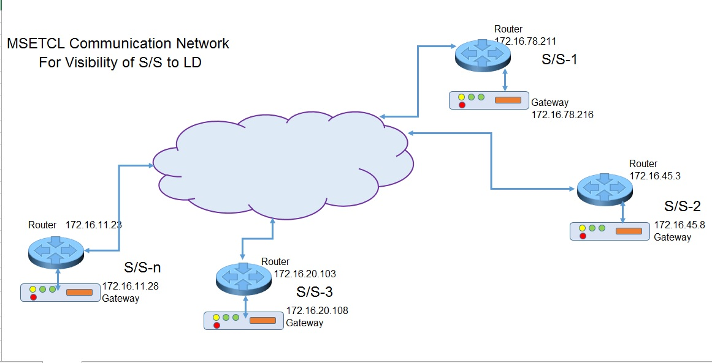

It is possible to scan the network from any of the substation in the network for checking connectivity of other substations in the same network. We can scan the network up to router as well as gateway too. Hence following fields are selected as Network Data
1) SS_ID
2) SS_Name
3) RouterIp
4) GatewayIp
After creating the file *.mcnx and entering data for above fields it is possible scan the network (ping the router and gateway one after another) by clicking either on schedule scan or other scan.